回廊 · UI 与美术对照
前版来自 A/B 快照。桌面比较为 1360 × 900，窄窗口为 412 × 824。点击截图查看原尺寸。
同帧美术方向
版本 B、手炮、预设 2。画面冻结在第二拨第一次冲锋预警。两图使用同一敌我位置、预警区和走位标记，比较范围为战斗画布。


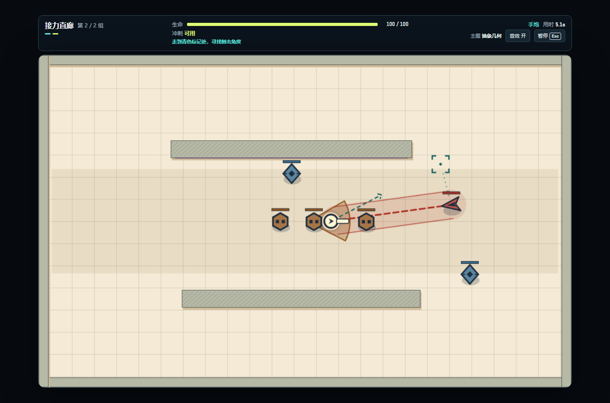
首页与模式
单房与原版长局置于首层。试验模式仍可从同一页进入。

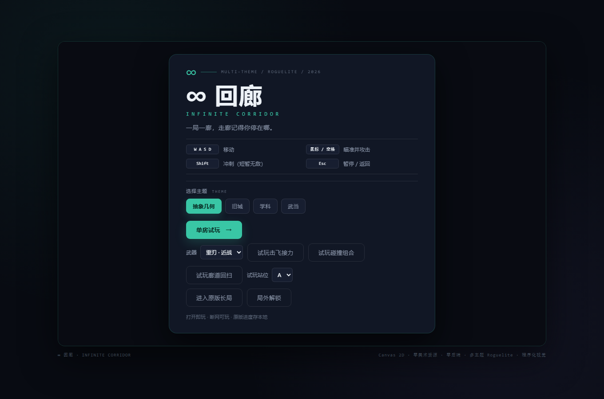

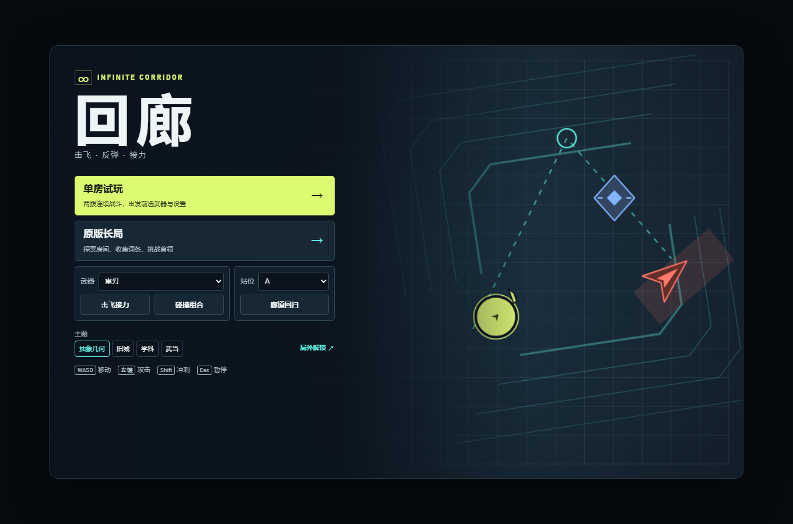
A/B 单房设置
版本、武器和预设各占一个字段，沿用中性标签。

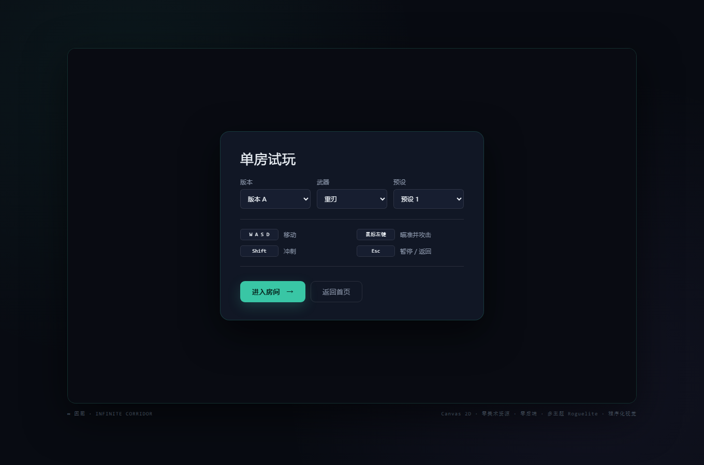

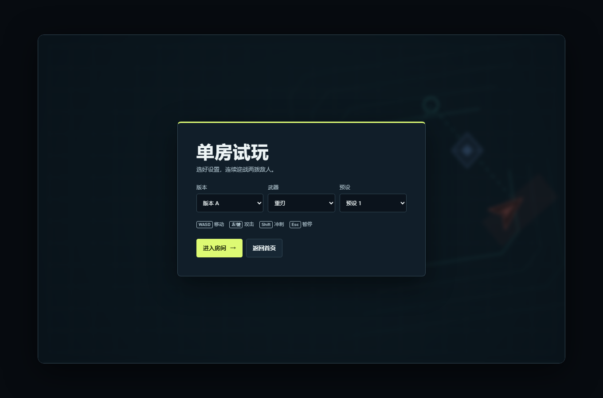
战斗 HUD 与预警
生命、进度、冲刺、计时和操作移到画布外。红色冲锋线出现时，青色走位标记可以同时出现。

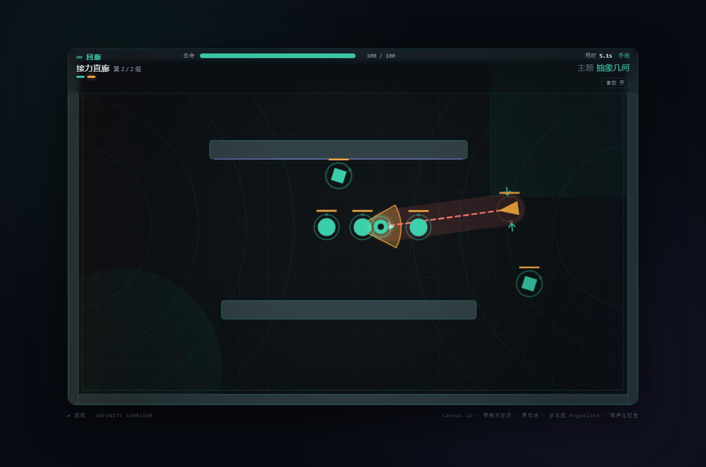

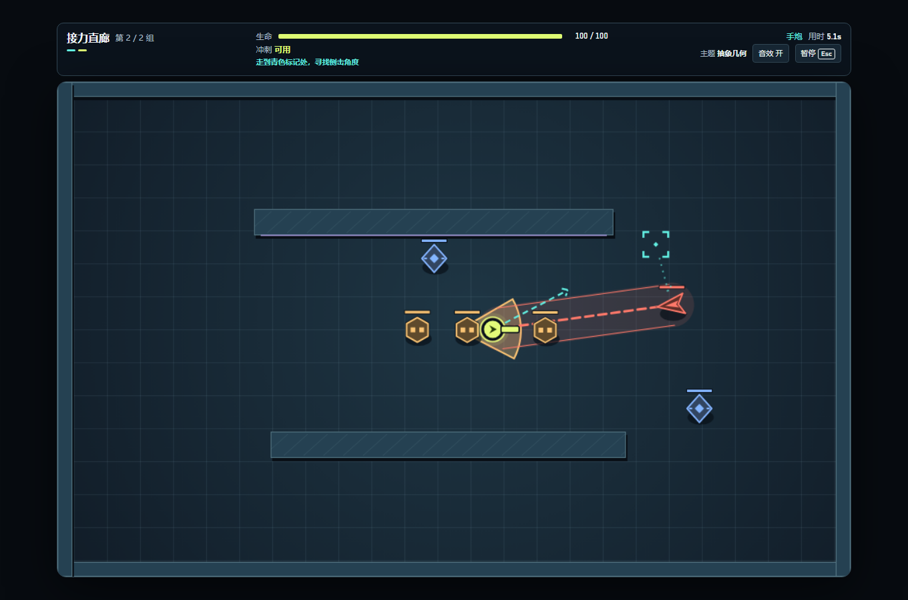
加点与词条
同一套卡片承载专精、回扫词条和长局词条。

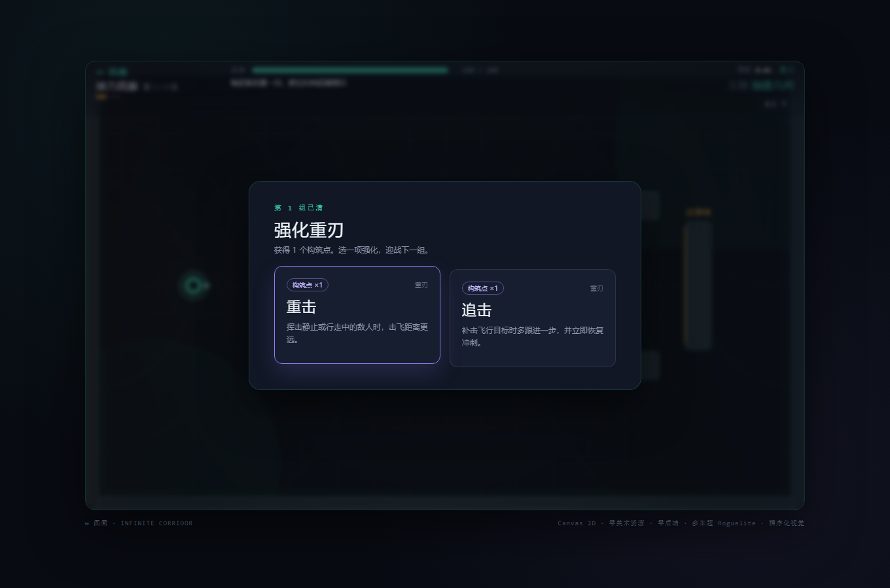

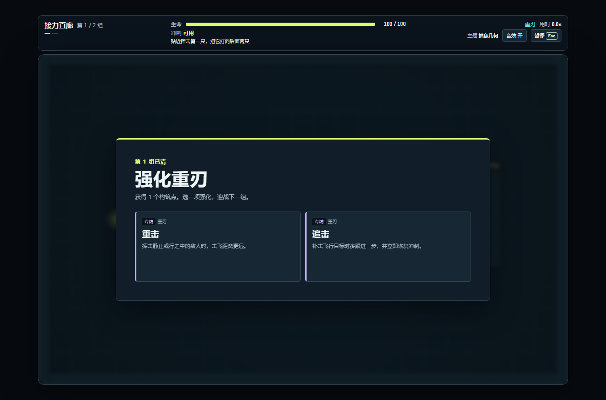
暂停
继续、重开与返回同屏可达。单房返回原设置。


结算
战斗计时、进度和击杀成组显示。长局结算可进入解锁。


解锁
金币、关闭与返回在列表滚动时可达。


窄窗口
主要操作保留在可滚动的菜单内。战斗画布等比显示，HUD 在画布上方。

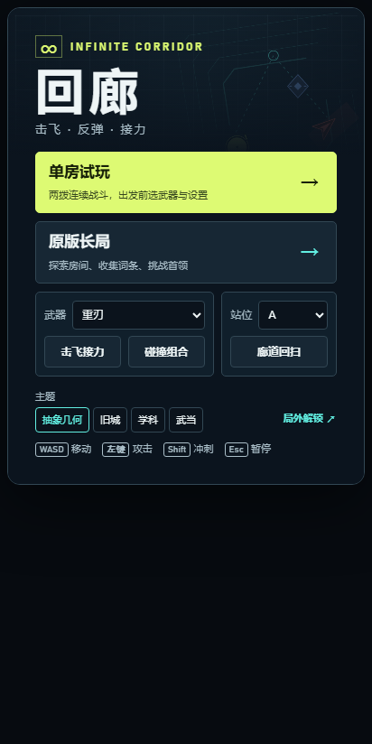

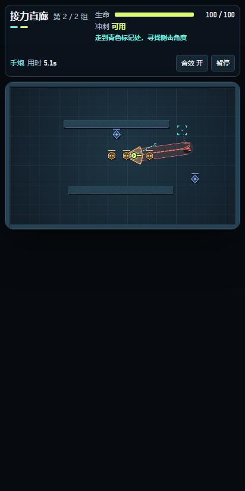
指引与兑现
冲锋蓄力或击飞反弹时给预备站位，触发时短闪，撞中后标出组合。

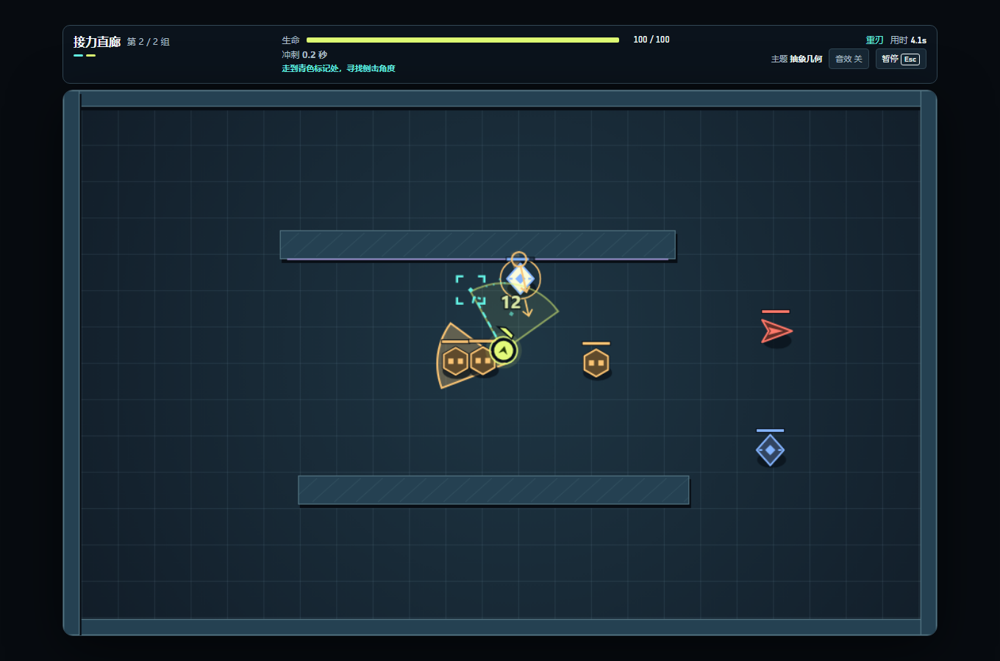

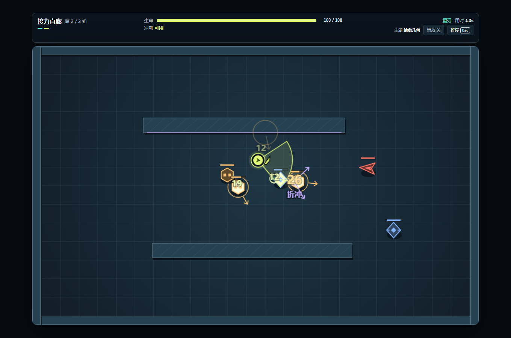

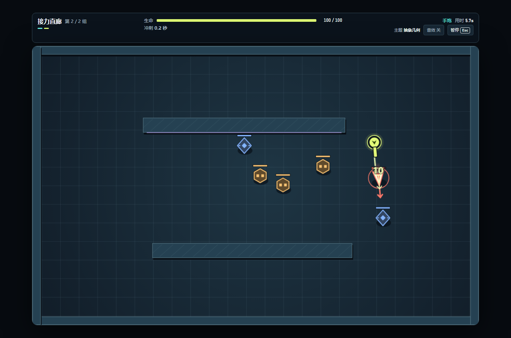

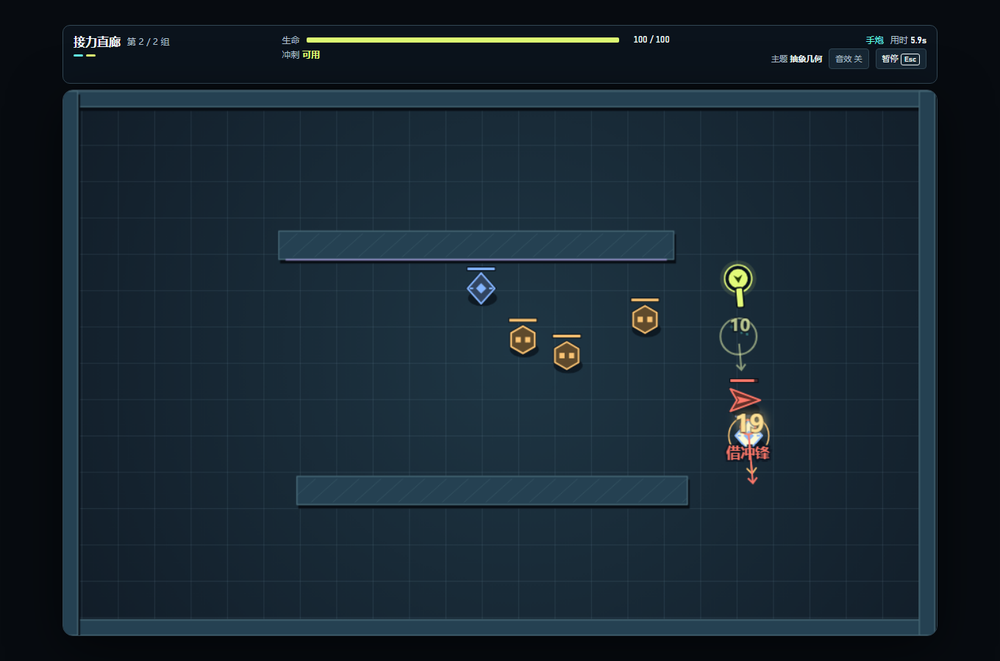